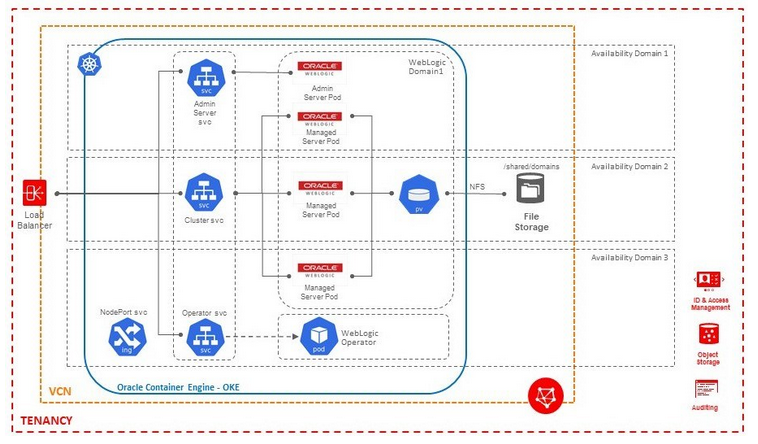
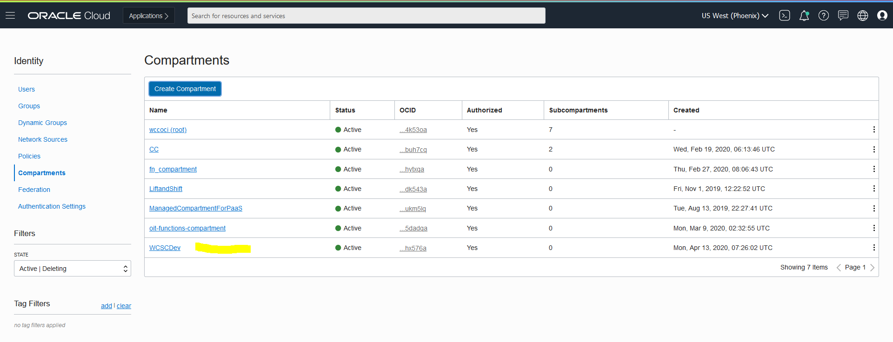

Generating public/private rsa key pair.
Your identification has been saved in <path>/id_rsa.
Your public key has been saved in <path>/id_rsa.pub.
The key fingerprint is:
SHA256:xCi1gf1QFafbRwOM3WjUTgqEInwi6UklbuxbBeMzA6M demokey
The key's randomart image is:
+---[RSA 2048]----+
| +++oo..++*++ |
| ++==+==. oo=.+ |
|Eo+o*+++o .o +o |
| oo * .. o.... |
| . . S . . . |
| o . |
| . |
| |
| |
+----[SHA256]-----+
Within your tenancy, there must be a compartment to contain the necessary network resources (VCN, subnets, internet gateway, route table, security lists).

Setup a bastion node for accessing internal resources.
$ bash -c "$(curl -L https://raw.githubusercontent.com/oracle/oci-cli/master/scripts/install/install.sh)"
$ oci setup config
This command provides a walkthrough of creating a valid CLI config file.
The following links explain where to find the information required by this
script:
User OCID and Tenancy OCID:
https://docs.cloud.oracle.com/Content/API/Concepts/apisigningkey.htm#Other
Region:
https://docs.cloud.oracle.com/Content/General/Concepts/regions.htm
General config documentation:
https://docs.cloud.oracle.com/Content/API/Concepts/sdkconfig.htm
Enter a location for your config [/home/opc/.oci/config]:
Enter a user OCID: ocid1.user.xxxxx5n3a
Enter a tenancy OCID: ocid1.tenancy.xxxxxxmffq
Enter a region (e.g. ap-mumbai-1, ap-seoul-1, ap-sydney-1, ap-tokyo-1, ca-toronto-1, eu-frankfurt-1, eu-zurich-1, sa-saopaulo-1, uk-london-1, us-ashburn-1, us-gov-ashburn-1, us-gov-chicago-1, us-gov-phoenix-1, us-langley-1, us-luke-1, us-phoenix-1): us-phoenix-1
Do you want to generate a new RSA key pair? (If you decline you will be asked to supply the path to an existing key.) [Y/n]: Y
Enter a directory for your keys to be created [/home/opc/.oci]:
Enter a name for your key [oci_api_key]:
Public key written to: /home/opc/.oci/oci_api_key_public.pem
Enter a passphrase for your private key (empty for no passphrase):
Private key written to: /home/opc/.oci/oci_api_key.pem
Fingerprint: 30:b9:a6:80:6e:b7:bb:7d:f9:79:6b:84:48:30:03:16
Config written to /home/opc/.oci/config
If you haven't already uploaded your public key through the console,
follow the instructions on the page linked below in the section 'How to
upload the public key':
https://docs.cloud.oracle.com/Content/API/Concepts/apisigningkey.htm#How2
#install docker-engine
sudo yum -y install docker-engine
#Enable and start docker service
sudo systemctl enable docker
sudo systemctl start docker
#Add opc to docker group
sudo /sbin/usermod -a -G docker opc
$ docker version
Client: Docker Engine - Community
Version: 19.03.1-ol
API version: 1.40
Go version: go1.12.5
Git commit: ead9442
Built: Wed Sep 11 06:40:28 2019
OS/Arch: linux/amd64
Experimental: false
Server: Docker Engine - Community
Engine:
Version: 19.03.1-ol
API version: 1.40 (minimum version 1.12)
Go version: go1.12.5
Git commit: ead9442
Built: Wed Sep 11 06:38:43 2019
OS/Arch: linux/amd64
Experimental: false
Default Registry: docker.io
containerd:
Version: v1.2.0-rc.0-108-gc444666
GitCommit: c4446665cb9c30056f4998ed953e6d4ff22c7c39
runc:
Version: spec: 1.0.1-dev
GitCommit:
docker-init:
Version: 0.18.0
GitCommit: fec3683
### Create the drop-in file /etc/systemd/system/docker.service.d/http-proxy.conf that contains proxy details:
cat <<EOF > /etc/systemd/system/docker.service.d/http-proxy.conf
[Service]
Environment="HTTP_PROXY=http://<your-company-domain>:80"
Environment="HTTPS_PROXY=http://<your-company-domain>:80"
Environment="NO_PROXY=localhost,127.0.0.0/8,.<no-proxy-domain>,/var/run/docker.sock"
EOF
$ sudo systemctl daemon-reload
$ sudo systemctl restart docker
$ docker info|grep -i proxy
cat <<EOF > /etc/yum.repos.d/kubernetes.repo
[kubernetes]
name=Kubernetes
baseurl=https://packages.cloud.google.com/yum/repos/kubernetes-el7-x86_64
enabled=1
gpgcheck=1
repo_gpgcheck=1
gpgkey=https://packages.cloud.google.com/yum/doc/yum-key.gpg https://packages.cloud.google.com/yum/doc/rpm-package-key.gpg
exclude=kube*
EOF
export PATH=/sbin:$PATH
setenforce 0
sudo sed -i 's/^SELINUX=enforcing$/SELINUX=permissive/' /etc/selinux/config
VERSION=1.18.4-0
sudo yum install -y kubelet-$VERSION kubeadm-$VERSION kubectl-$VERSION --disableexcludes=kubernetes
### enable kubelet service so that it auto-restart on reboot
sudo systemctl enable --now kubelet
cat <<EOF > /etc/sysctl.d/k8s.conf
net.bridge.bridge-nf-call-ip6tables = 1
net.bridge.bridge-nf-call-iptables = 1
EOF
sysctl --system
### run as a root user
### Update --fail-swap-on=false into /etc/sysconfig/kubelet
sed -i 's/KUBELET_EXTRA_ARGS=/KUBELET_EXTRA_ARGS="--fail-swap-on=false"/' /etc/sysconfig/kubelet
cat /etc/sysconfig/kubelet
### Reload and restart kubelet
systemctl daemon-reload
systemctl restart kubelet
$ oci -v
$ mkdir -p $HOME/.kube
$ oci ce cluster create-kubeconfig --cluster-id ocid1.cluster.oc1.phx.xxxxxx --file $HOME/.kube/config --region us-phoenix-1 --token-version 2.0.0
$ export KUBECONFIG=$HOME/.kube/config
$ kubectl get nodes
NAME STATUS ROLES AGE VERSION
10.0.10.2 Ready node 111m v1.18.4
10.0.10.3 Ready node 111m v1.18.4
10.0.10.4 Ready node 111m v1.18.4
Setup Filesystem
Setup the OCIR for managing Docker images.